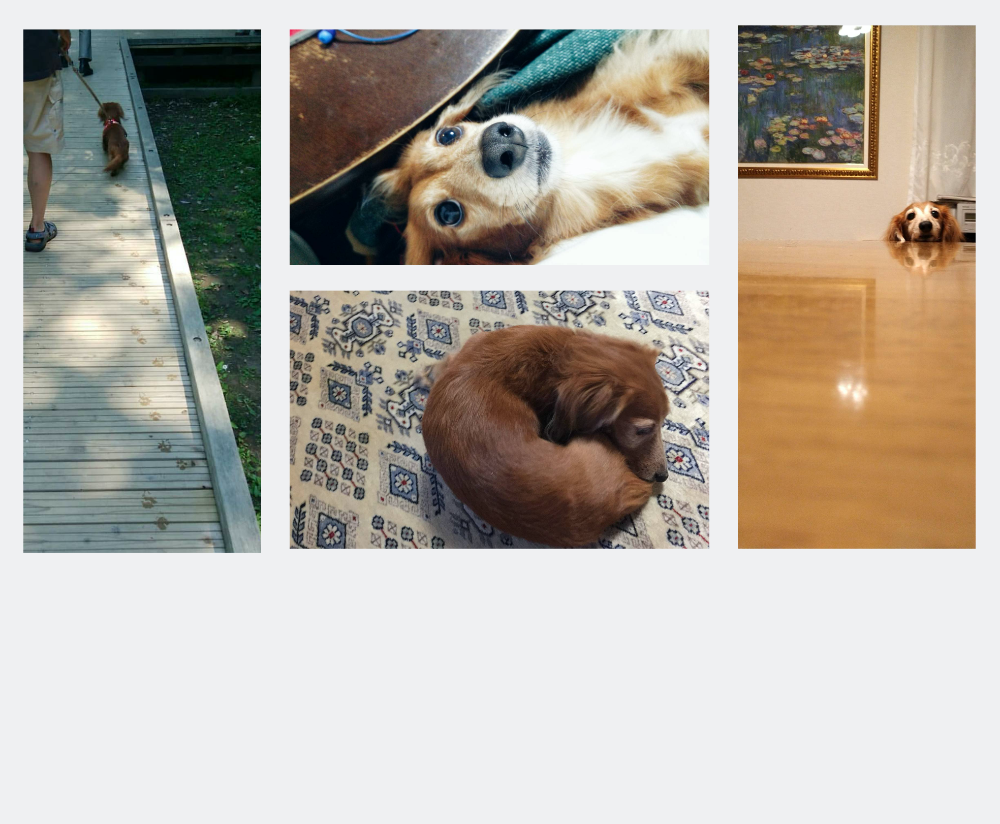

Euphonium(ユーフォニアム)とTrombone(トロンボーン)を武器に、マルチプレイヤーとして演奏会や依頼演奏に出演。
音楽活動は4歳からだが、初めはわずか１年程でやめてしまう。しかし、10歳頃再び活動を再会し、今も続けている。
高校時は団体では「全日本高等学校吹奏楽大会in横浜」に出場、個人では「全日本ジュニアクラシック音楽コンクール」の高校生の部で奨励賞を受賞する。
大学時では沢山の団体での活動や音楽文化の根強いスイスに留学を経て、音楽への知見を深める。現在所属している東京隆生吹奏楽団では「全日本吹奏楽コンクール」の一般の部で最高賞である金賞を受賞する。
- 経歴 -
江戸川女子吹奏楽部 前所属
明治大学応援団吹奏楽部 前所属
板橋区吹奏楽団 前所属
明治大学NewWaveJazzOrchestra 前所属
東京隆生吹奏楽団 現所属
東京清和吹奏楽団 現所属
自身の関係者を被写体として、撮影/編集をしている。 映像制作に関心をもったきっかけは、高校時の部活で行われた演奏会である。 そこでは、映像を投影しながら演奏するという初めての試みをし、その際に使用する映像を制作したことによる。 その後も、イベント事がある度に制作をしプレゼントすることで、多くの反響を得た。 また、これらの活動が後に大学で情報科学を専攻する決め手となる。
私にとって目まぐるしい生活の疲れを和らげてくれる存在、それが愛犬である。 11歳の時から飼い始め、中高生という青春時代を共に過ごした。 現在は10歳を迎え、小型犬としては高齢犬に入る。薬を４種類も服用しなければならない状態だが、 そんな彼女を日々愛情もって世話をしている。
